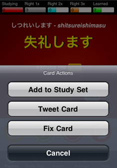

If you find things you believe are incorrect, please us know. It's quick & easy!
Tap the Actions button on the Practice screen. Tap Fix Card.
This form below will display; you can immediately send us details for inclusion in the next update of Japanese Flash.